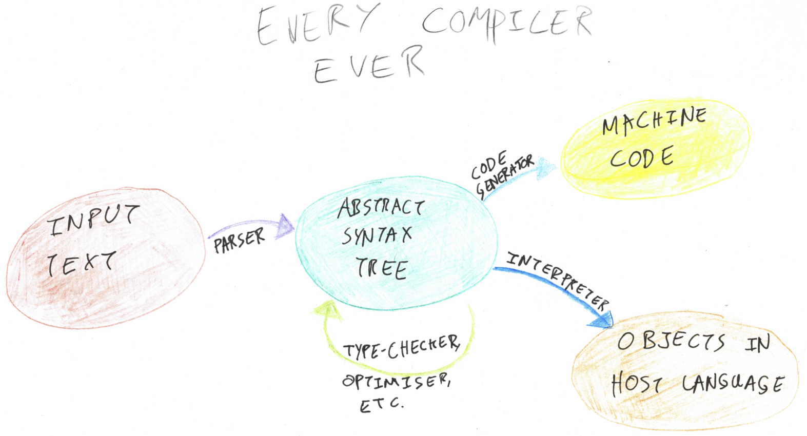

Building Prolog's Rules Engine
This is part of a series of posts about implementing a miniature Prolog interpreter in C#.

Today’s the day! We’re going to turn last week’s unification algorithm into an actual programming language by filling in the bottom-right part of the above diagram. Prolog’s rules engine is the system which processes the predicates and facts in your program to answer queries.
The Database
When you load a program into your Prolog interpreter, it reads the collection of rules into an internal data structure. This data structure is known as Prolog’s database. For simplicity we can represent the database as an array of rules (ie, the same structure which comes out of the parser), but a real Prolog interpreter would use a more specialised data structure to make querying more efficient.
class Engine
{
private readonly ImmutableArray<Rule> _database;
public Engine(ImmutableArray<Rule> database)
{
_database = database;
}
// ...
}A First Attempt
Prolog’s interactive terminal accepts queries (predicates) and outputs a substitution which satisfies the query, according to the rules in the database. So the signature for Query is
If a goal can’t be satisfied, Query will return null.
When you type a query, Prolog looks for the first rule in its database which matches the goal. In code, that means looping over _database and ignoring rules whose Head doesn’t unify with the goal.
public ImmutableDictionary<string, Term> Query(Term goal)
{
foreach (var rule in _database)
{
// call the overload below
var result = Query(rule, goal);
if (result != null)
{
return result;
}
}
return null;
}
private ImmutableDictionary<string, Term> Query(Rule rule, Term goal)
{
ImmutableDictionary<string, Term> subst;
try
{
subst = rule.Head.Unify(goal);
}
catch (UnificationError)
{
return null;
}
// ...
}If the rule’s head does match the goal, Prolog needs to check the conditions on the right hand side of the rule. Each predicate on the right-hand side becomes a sub-goal; we’ll recursively call Query for each of these sub-goals. These recursive Query calls will return a substitution, and the information from those substitutions needs to be propagated bi-directionally. It’s just like when we were solving a system of equations in the last post: we’ll propagate information forwards by Applying the current substitution to later sub-goals, and propagate it backwards by Compose-ing the substitutions from each recursive Query call into the current substitution.
public ImmutableDictionary<string, Term> Query(Rule rule, Term goal)
{
// ...
foreach (var predicate in rule.Body)
{
var subst2 = Query(subst.Apply(predicate));
if (subst2 == null)
{
return null;
}
subst = subst.Compose(subst2);
}
return subst;
}If any of the recursive Query calls failed, that means one of the conditions on the right hand side was not satisfiable, so the whole rule fails (this function returns null) and we have to try the next one. Eventually we hope to find a rule whose head matches the goal and whose conditions are satisfied. This means the query was successful, so we return the subst corresponding to the rule.
That’s a decent first stab at the code for Query. Now we have to fix the bugs.
Backtracking
Here’s a trimmed-down version of the example database from the first post.
likes(benjamin, asparagus).
likes(benjamin, pizza).
likes(clio, pizza).
dinner(Food) :- likes(benjamin, Food), likes(clio, Food).When we feed this database into our Engine and ask it what’s for dinner,
var program = @"
likes(benjamin, asparagus).
likes(benjamin, pizza).
likes(clio, pizza).
dinner(Food) :- likes(benjamin, Food), likes(clio, Food).
";
var ast = PrologParser.ParseProgram(program);
var engine = new Engine(ast);
var query = PrologParser.ParseQuery("dinner(Food)");
var result = engine.Query(query);
if (result == null)
{
Console.WriteLine("no solution");
}
else
{
Console.WriteLine(Write(result));
}it replies no solution, even though there is a clear solution (Food := pizza). What did we do wrong?
Let’s think about how our engine is going to execute this query.
- Find a rule whose head unifies with the goal. There’s only one option: the
dinner(Food)line. - Query for the first predicate in the rule’s body, namely
likes(benjamin, Food). - Find a rule whose head unifies with the predicate. There are two options,
likes(benjamin, asparagus)andlikes(benjamin, pizza). The engine chooses the first one, soFood := asparagus. - Now query for the second predicate in the rule’s body, which is
likes(clio, Food). SinceFood := asparagus, we’re looking forlikes(clio, asparagus) - Since there are no rules matching
likes(clio, asparagus)the query fails.
The bug was in step 3, when the engine committed to the first rule which matched. It later realised that Food couldn’t be asparagus, so it needs to be able to backtrack and undo that decision. (This is very similar to the backtracking which parsers do, as detailed in an earlier post.)
The reality is that each goal may have multiple substitutions which satisfy it. likes(benjamin, Food) has two solutions, Food := asparagus and Food := pizza, but we threw away the second one. So our Query signature really should’ve looked like this:
When there’s no solution, Query will return an empty list (rather than null as before). I’ll update the implementation to work with a collection of substitutions.
public IEnumerable<ImmutableDictionary<string, Term>> Query(Term goal)
=> _database.SelectMany(rule => Query(rule, goal));
private IEnumerable<ImmutableDictionary<string, Term>> Query(Rule rule, Term goal)
{
IEnumerable<ImmutableDictionary<string, Term>> substs;
try
{
substs = new[] { rule.Head.Unify(goal) };
}
catch (UnificationError)
{
return new ImmutableDictionary<string, Term>[] { };
}
foreach (var predicate in rule.Body)
{
substs =
from subst in substs
from subst2 in Query(subst.Apply(predicate))
select subst.Compose(subst2);
}
return substs;
}SelectMany (and from...select, which is the same thing under the hood) coming in clutch here. Each predicate in the body of a rule has potentially many solutions, so each recursive call to Query introduces potentially many possible branches to choose from. SelectMany lets us take all of them — but because IEnumerable is lazy, at runtime it doesn’t actually explore more branches than necessary to find a single solution. It also handles the “no solutions” case gracefully: if substs is empty then the body of the foreach loop does nothing. (SelectMany always returns an empty collection when its input collection is empty.)
Working with immutable data is of utmost importance here. Combining lazy IEnumerables with mutable data can have catastrophic consequences because it’s hard to predict when your code will be run. The body of my loop computes a new substs to be used for the next iteration; it doesn’t update a single collection of solutions. I don’t know what would happen if you did write it like that but I know it would be wrong!
Feeding the dinner(Food) query into this version of the code correctly outputs Food := pizza.
Scope Management
Discharging
Here’s another example program which reveals a bug in Query.
test() is straightforwardly true, but our interpreter again prints out no solution. Once again, let’s walk through the steps the engine will take.
- Query
foo(wibble). The only rule matching this goal isfoo(X)., which matches whenX := wibble. So the recursive call toQueryreturns the substitutionX := wibble. - Apply that substitution to the rest of the
testrule. - Query the second predicate in
test, which isbar(wibble). This goal fails because the onlybar-related fact in the database isbar(baz).
The bug is in step 1, when we returned the X := wibble substitution. foo’s X escaped its scope and collided with the X in test’s body. We need to adjust our code so that variables can’t escape their scope by being returned in a substitution.
The fix is to discharge some of the equalities in a substitution at the end of running a rule (that is, on the last line of Query). We want to throw out equalities related to variables which were local to the rule, keeping only the ones which tell you something about the variables in the goal.
private IEnumerable<ImmutableDictionary<string, Term>> Query(Rule rule, Term goal)
{
// ...
return substs.Select(s => Discharge(s, goal));
}
private static ImmutableDictionary<string, Term> Discharge(ImmutableDictionary<string, Term> subst, Term goal)
=> subst
.Where(kvp => goal.Variables().Contains(kvp.Key))
.ToImmutableDictionary();This fixes the bug. test() now correctly returns an empty substitution.
Freshening
There’s one final bug to fix in the engine.
Running the query foo(X, b) should return X := a, but the interpreter prints no solution. This is of course another name collision issue. When unifying the goal with the left hand side, the interpreter has mistaken the two Xs for being the same X. The X in foo’s left hand side should be local to foo.
To avoid unintentional collisions we need to freshen local variables. Whenever the interpreter enters a rule, it should rename the rule’s local variables to new variables which aren’t being used anywhere in the goal. An easy way to guarantee that a name isn’t being used anywhere in the goal is to stick a number on the end of it, and increase that number by 1 each time. (I’m also going to put an ? on the front of the auto-generated variable names, because variables beginning with ? is not valid Prolog so it’s guaranteed not to collide with a name typed by a programmer.)
private int _freshenCounter = 0;
private Rule Freshen(Rule rule)
{
// find all of the rule's local variables.
// NB: local variables may appear in the rule's body but not the head.
var variables = rule.Body
.Select(x => ((Term)x).Variables())
.Aggregate(((Term)rule.Head).Variables(), (xs, ys) => xs.Union(ys));
// build a substitution which maps each variable to a fresh version of that variable
var subst = ImmutableDictionary<string, Term>.Empty;
foreach (var variable in variables)
{
subst = subst.Add(variable, new Variable("?" + variable + _freshenCounter));
_freshenCounter++;
}
// apply the substitution everywhere in the rule
return new Rule(
(Predicate)subst.Apply(rule.Head),
rule.Body.Select(subst.Apply).Cast<Predicate>().ToImmutableArray()
);
}Then at the start of Query we need to Freshen the rule we’re about to enter.
private IEnumerable<ImmutableDictionary<string, Term>> Query(Rule rule, Term goal)
{
rule = Freshen(rule);
// ...
}The foo(X, b) query now correctly returns X := a.
Here’s the final implementation of Query in full.
public IEnumerable<ImmutableDictionary<string, Term>> Query(Term goal)
=> _database.SelectMany(rule => Query(rule, goal));
private IEnumerable<ImmutableDictionary<string, Term>> Query(Rule rule, Term goal)
{
rule = Freshen(rule);
IEnumerable<ImmutableDictionary<string, Term>> substs;
try
{
substs = new[] { rule.Head.Unify(goal) };
}
catch (UnificationError)
{
return new ImmutableDictionary<string, Term>[] { };
}
foreach (var predicate in rule.Body)
{
substs =
from subst in substs
from subst2 in Query(subst.Apply(predicate))
select subst.Compose(subst2);
}
return substs.Select(s => Discharge(s, goal));
}Here are some exercises you could try:
- Because we implemented
_databaseas an array, finding a matching rule is linear in the size of the program. Try optimising the_databasedata structure. - Try optimising
Freshenso that it doesn’t rename more variables than it needs to.- It’s actually possible to avoid freshening altogether by changing the way variables are represented.
- Backtracking is enabled by default in Prolog (unlike in Pidgin where it’s disabled by default). The full Prolog language includes the
!operator (pronounced cut) to disable backtracking when necessary. When Prolog encounters!in the right-hand side of a rule, it commits to all of the choices it’s made since (and including) selecting that rule from the database. Try implementing cut as an exercise. (You’ll need to change the parser, the AST, and the rules engine.)
Today’s code is available in the example repo, in the Engine.cs file.
Comments
By Benjamin on
To join the discussion, send me a pull request.